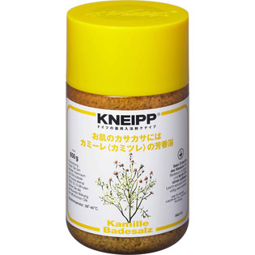

返回列表
产品名称：クナイプ バスソルト カミーレ

クナイプ・ジャパン クナイプ バスソルト カミーレ ８５０ｇ
メーカー クナイプ・ジャパン
JANコード 4580294850131
商品の特徴
天然岩塩にカミーレの精油を配合したバスソルトです。
お風呂に浸かってお肌のカサカサをしっとりと保湿します。
成分・分量
【成分】
塩化Ｎａ・油溶性カモミラエキス・炭酸Ｎａ・オレイン酸ＰＯＥ（４０）ソルビット・ビサボロール・黄２０３・香料
用法及び用量
【使用方法】
浴そうのお湯（約２００Ｌ）にバスソルト４０ｇをよくかきまぜながら溶かして入浴してください。